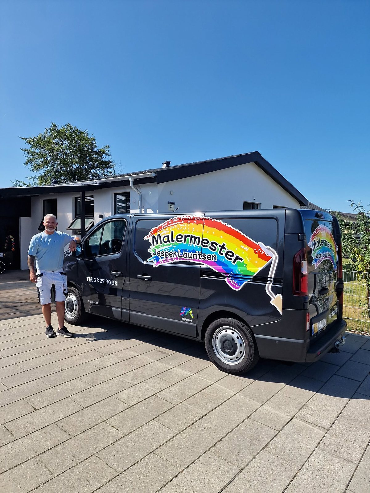
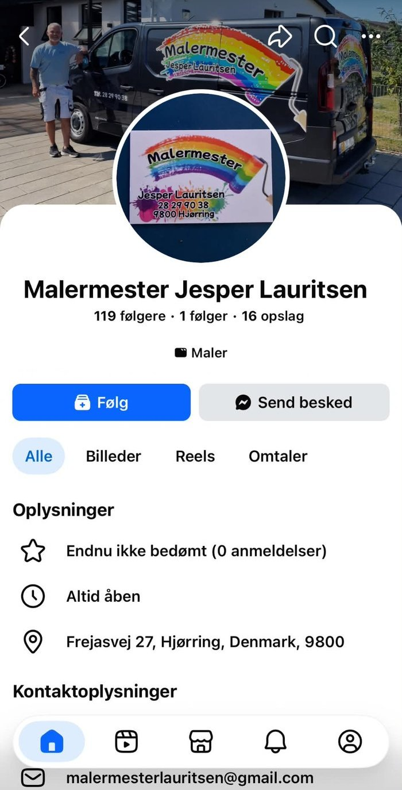

Indvendig maling
Lofter, vægge og træværk. Jeg frisker også trapper, gelændere, paneler og køkkenlåger op.
Malermester i Hjørring
Fra hvide lofter og frisk træværk til tapet, fototapet og udvendig maling af huset. Ring til mig, så kigger jeg på din opgave.

Store og små opgaver. Jeg gør forarbejdet ordentligt, så resultatet bliver flot og holder.
Lofter, vægge og træværk. Jeg frisker også trapper, gelændere, paneler og køkkenlåger op.
Maling af huset, gavle og stakit, så det er beskyttet mod vejret og står skarpt igen.
Kitning og maling af vinduer, der beskytter træet mod vejret.
Spartling, slibning og opsætning af filt, så væggene er klar til maling.
Mønstret tapet og fototapet, der giver rummet personlighed.
Kantiner, toiletter og andre erhvervslokaler, der trænger til at blive lysnet op.
Et udvalg af opgaver, jeg har hjulpet kunder med.
Før og efter
Så tøv ikke med at ringe eller skrive. Fortæl kort, hvad du har brug for, så vender jeg tilbage.

Det hjælper, hvis du på forhånd har taget billeder, lamper og gardiner ned og tømt de reoler, der skal flyttes.
Jeg flytter gerne møbler og dækker selv af, men jo mere der er klar, når jeg kommer, jo færre timer skal du betale for.
Ja. Snavs, alger og løs maling skal væk, ellers sidder den nye maling ikke ordentligt fast. Jeg vasker overfladen, fjerner det løse og venter, til alt er helt tørt.
Forarbejdet tager tid, men det er det, der gør, at malingen holder i mange år.
Det afhænger af malingen. Vandbaseret vægmaling skal typisk have nogle timer, før næste lag kommer på, selvom den føles tør meget før. Maler man for tidligt, kan det nye lag trække det gamle med sig.
Oliebaseret maling på træværk skal som regel have et døgn. Jeg følger altid producentens anvisninger.
Som regel to. Skal en mørk væg være lys, eller er væggen nyspartlet, starter jeg med en grunder og maler derefter to lag.
Ét lag dækker sjældent jævnt, og forskellen ses især, når lyset falder skråt ind fra vinduerne.
Nej, det er ikke nødvendigt. Det er nok, at de står samlet midt i rummet, så der er plads til at arbejde langs væggene. Jeg dækker både møbler og gulv til.
Skal der spartles og slibes meget, støver det dog, og så er det bedst at flytte det, der kan flyttes, ud af rummet.